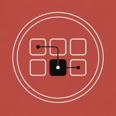

Six-voice modeled percussion

TACTA
An independent six-voice percussion instrument inspired by the Nord Drum 2's six-channel percussion architecture, expanded around touch, live variation and precise rhythmic editing.
Six voices combine tone, noise and click synthesis. PERFORM varies the playing Pattern on an XY surface, while SEQ edits steps, timing, conditions and locks. Projects keep Patterns, their Kits and the Song arrangement together.
- Six independent percussion voices
- Tone / noise / click synthesis
- PERFORM XY rhythm variation
- SEQ six-voice step editor
- Projects, Songs, Pattern library and MIDI
In development
- Targets
- iPhoneiPad
- Formats
- StandaloneAUv3
- Current
- Native qualification
- Planned
- VST3 · Windows + macOS